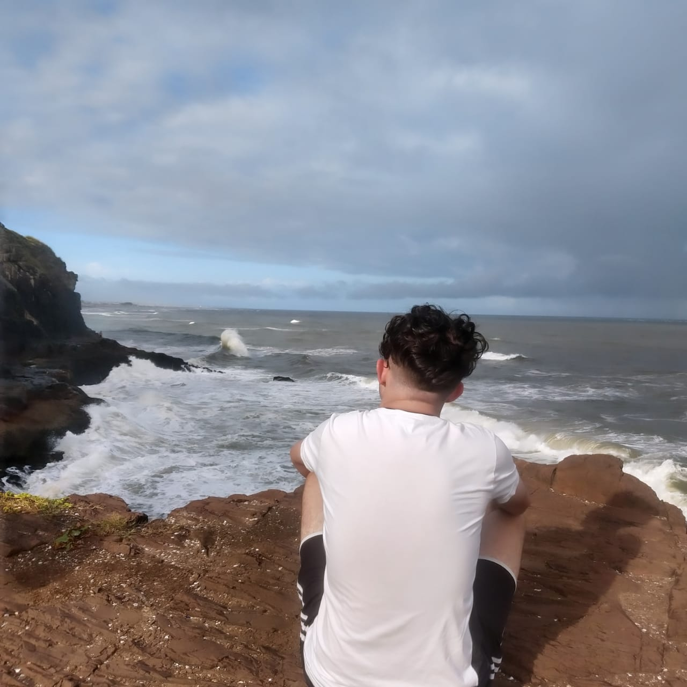

Meu nome é Mateus, tenho 15 anos e nasci dia 14 de dezembro de 2008, moro com meus pais e meu irmão. E tenho
o
sonho de trabalhar na área de programação.
Estudo de segunda a sexta de manhã na E.E.E.M Vila Prado, e trabalho de noite fazendo xis, dogs e etc. E
também
faço curso no colégio ULBRA São Lucas.

Tenho um conhecimento médio em java e básico em html e css.
Fiz um jogo onde é preciso advinhar o número secreto de 1 a 10: